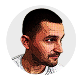

About Me

As a designer and front-end developer, I have experience in web design, creating brands and designing print materials for over four years. Some of my strenghts are creative design concepts and development, front-end developments, typography, and bridging communication between designers and developers.
I find inspiration in nature, architecture, music, and other creative designers. I'm a fan of structure and simplicity in both design and code; organization and consistency always shows in my work. When I'm not working, you can find me at a coffee shop, exercising outdoors and learning more about design.
My passion not only is in design but also Web Development. My goal is to be a well-rounded Web Developer and Graphic Designer. While taking courses, I also learn from tutorials and resource sites to expand my knowledge. My best nights consist of designing and coding for hours with a cup of coffee and some music.
CREDENTIALS
Full Stack Web Developer - Houston Coding Boot Camp - 2017
Current Student
B.S. Multimedia Design & Development - DeVry University - 2015
Focused on Web Design & Graphic Design